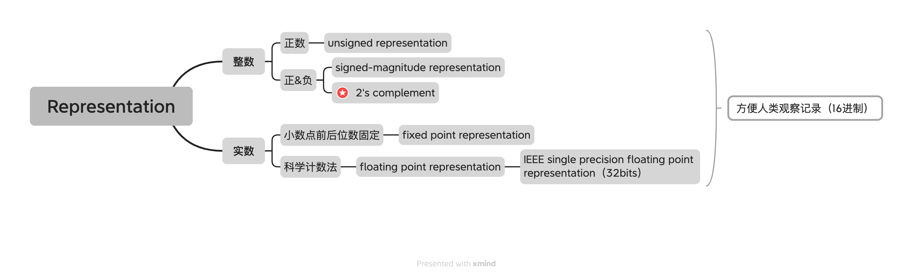
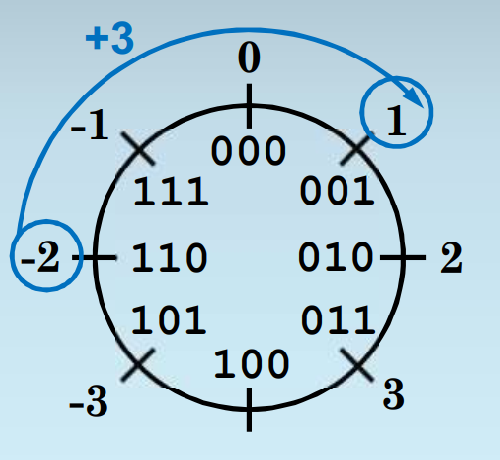
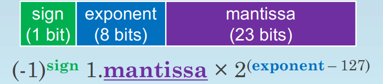

计算机中的数值表示¶
representation可以理解为一种函数映射关系，需要一一对应。由于计算机中的所有信息都是由电位的高低两种状态表示的，本节内容主要讲述如何将数字映射到bits

Unsign Representation¶
N-bits unsign representation：二进制+补零对齐(补足N位)
- 如何从二进制转化到十进制 --按位计算
- 如何从十进制转化到二进制 --中国宝宝用辗转相除
应付考试的话会算就可以了，但是此处ppt解释了进制转化的原理，其实对于K进制，原理都是相通的（把一个数表达成关于K的多项式）
例如，对于 K 进制数 \((a_4a_3a_2a_1a_0)_k\):
根据多项式表达，想要把 K 进制转化成十进制，很容易，只要把等式右边的一项求出来。
如果把十进制转化成 K 进制：
这样余数就是我们所需要的，之后去前面整数部分重复同样的运算：
得出 \(a_1\)，到这里就可以看出为什么辗转相除，最后的余数结果是需要倒着写回去的。
基于把各个进制的数表达为一个多项式，我们可以实现任意进制之间的转化。
e.g \((101010)_2\) <-> \((42)_{10}\)
如：二进制到十进制:
十进制到二进制:
用 42 除以 2：
- 42 ÷ 2 = 21 余 0
- 21 ÷ 2 = 10 余 1
- 10 ÷ 2 = 5 余 0
- 5 ÷ 2 = 2 余 1
- 2 ÷ 2 = 1 余 0
- 1 ÷ 2 = 0 余 1
考点：1.十进制与unsign representaion之间的互相转换 2.overflow问题，见Overflow problem
Signed-Magnitude Representation¶
(not very important: because it is not a good representation)
考试一般不会考，用以引入2‘s complement
Signed-Magnitude Representation基于人类表示负数的思想（在正数前加一个负号），把第一位当作符号位置，0表示正数，1表示负数
问题：
- 有两个0，正0和负0，导致representation的浪费和运算的复杂
- 不符合常规运算的准则：e.g 1011（-3）+ 0100（4） = 1111（-7）

2's Complement¶
⚠️very important
所有的representation的共同点就是，可以用的bit位是固定的-->运算是不封闭的
不封闭：把representation的所有可能看做一个集合，取集合中的元素进行运算，运算产生的元素不在集合内(overflow)，则这个representation是不封闭的 e.g 4-bits-unsigned representation 1011（11）+0111（7） = 10010（18） 10010已经不在4-bits-unsigned representation的这个集合内了
为了设计一个在忽略overflow的情况下，满足现有计算法则并且能同时表示正数和负数的representation，我们首先要清楚普通的unsigned representation运算背后的数学本质：同余
根据刚才的例子：
- 1011（11）+0111（7） = 10010（18）
如果一定要让结果能被4-bits-unsigned representation表示，那么就只能保留后四位，0010（2），保留后四位的操作相当于什么呢？
- \((10010)_2\) \(\div\) \((16)_{10}\) = \((10010)_2\) \(\div\) \(2^4\) = 0010
同余的定义：如果两个数A, B可以表示为 A = B + k * M 其中k是整数，那么可以写作 \(A \equiv B \pmod{M}\)，A和B对模M同余（其实关于K也可以啦，反正M和k都是整数） e.g 0010(2) + 1 * 16 = 10010(18) 那么就可以说2和18对模16同余
当两个N-bits-unsigned representation相加时，如果结果超出了最大值\(2^N - 1\)，只保留低N位的操作，等价于相加结果对\(2^N\)取模
基于对unsigned-representation运算的理解，我们就可以开始设计合理的负数表示 -- 2's complement

在这张图中，顺时针方向是加，逆时针方向是减，每一个bit pattern可以表示对应的满足同余性质的数，如我可以规定000代表0，我也可以规定它代表8。既然每个pattern表示的数字由我定义，我是不是就可以把代表0的pattern往逆时针方向的第一pattern定义为-1，第二个定义为-2呢？基于这样的想法，定义了负数的表示。最后多了一个100，定义为-4还是4呢？观察数的特征，负数都是1开头的，那么不妨直接把100定义为-4，保持负数开头为1这样的特征，方便判断正负。
从代数的角度证明：N-bit 2's complement 因为既能表示正数，也能表示负数，所以相应表示的正数少了一点，若采取对半开的原则(\(2^{N-1}个\))，可以表示负数的绝对值从[1,\(2^{N-1}-1\)]（下面的证明过程和ppt完全一样，个人感觉挺妙的）
对每一个k \(\in\) [1,\(2^{N-1}-1\)]，我们希望在N位bit pattern里面找到一个pattern(P)可以用来表示 -k这个负数，要满足同余算律（我们希望这个pattern可以被当作普通的unsign-representation一样进行运算）即 $$ -K + M \equiv P + M \pmod{2^N} \quad {\text 此处M为任意整数} $$ P是某个bit pattern，这个bit pattern在传统的unsigned-representation中代表的数值范围是[0,\(2^{N-1}-1\)]，这么说有点抽象，假设N是三，P就是000 001 010 011 100 101 110 111这八个bit pattern当中的一个 $$ -K + M \equiv P + M \pmod{2^N} \quad {\text 此处M为任意整数} $$ 根据同余运算律，上面式子等价于下面式子 $$ -K \equiv P \pmod{2^N} $$ 已知 $$ 2^N \equiv 0 \pmod{2^N} $$ 得到 $$ 2^N - K \equiv P + 0 \pmod{2^N} $$ 因为K \(\in\) [1,\(2^{N-1}-1\)],所以\(2^N - K\) \(\in\) [\(2^{N-1}\),\(2^{N}-1\)]这个pattern已经落在[0,\(2^{N-1}-1\)]的范围内了，就是说可以用N位的representation表示了，因此把这个既符合位数要求，又符合运算要求的bit pattern定义为-k的表示
既然-K(e.g -3)用 \(2^N - K\)(e.g 8-3 = 5 -> 101)表示了，应该如何实现十进制整数和2's complement之间的转化呢？
一下循序渐进讲解两种转换的方式，选择一种自己喜欢的掌握就可以
1.定义法
-K 用的是\(2^N - K\)的pattern
- 确定是多少bit的2's complement (e.g 7-bits 2's complement)
- 从十进制转化到二进制：e.g -42 用的是 \(2^7 = 126 - 42 = 86\)用的是86的pattern，再把86这个数直接转化成二进制就是-42的7-bits 2's complement表示（如何转化参考unsigned representation辗转相除法），得1010110
- 从二进制转化到十进制：\((1010110)_2\)表示的十进制数是多少？先看首位，1开头，确定是负数；再把这个数直接转化成十进制，\(1*2^6 + 1*2^4 + 1*2^2 + 1*2^1 = 86\); 再用\(2^7\)减去86，得到42，最后加上符号
补充（二进制转化到十进制简化）：转化过程无非是把\(2^N - K\)先转化成十进制，然后减去\(2^N\)，由于2's complement里面的负数都有一个特性，就是开头必定是1，所以一定会有\(1*2^{N-1}\)这一项，可以把\(1*2^{N-1}\)和\(-2^N\)合并一下，就变成了\(-2^{N-1}\),所以就是第一位1前加负号，其他正常运算\(-1*2^6 + 1*2^4 + 1*2^2 + 1*2^1 = -42\)直接得到结果
2.补码法
通过一点小技巧化简运算过程，这种运算方法也是2's complement的名称由来
- 从十进制转化到二进制
- 1.确定转化的数位(e.g 7-bits 2's complement)
- 2.确定要转化的数是正数还是负数(e.g -42)
- 3.用辗转相除把带转化数的绝对值转化成二进制 42 -> \((101010)_2\)
- 4.补齐数位：7-bits，转化完只有6-bits，前面填0补到7位 \((0101010)_2\)
- 5.如果第2步中确定的数为正数，则到此为止，如果为负数，继续转化
- 6.把0变成1，1变成0（补码） \((1010101)_2\)
- 7.二进制运算 + 1 \((1010101)_2 + 1 = (1010110)_2\)
看到这里，你也许会感到奇怪，为什么补码法和前面的方法是等价的呢？让我们回归定义 -k 用的是 \(2^N - K\)的bit pattern，对\(2^N - K\)做一点小小的变形，\(2^N - K = ((2^N - 1 )- K ) + 1\)，而\(2^N - 1\)这个数是非常有特点的，\(2^N\)转换到二进制表示中，就是只有第N+1位上的数字是1，其他数字全是0的数，而\(2^N - 1\)转化到二进制表示中，每一位上的数字都是1。当全是1的减去另外一个数，在二进制运算中，相当于1变0，0变1，e.g 111111 - 00101 = 11010,这样的话，我们就通过取1的补码的方式，得到了\((2^N - 1)- K\)的运算结果，然后再加1就可以得到最终的表示
- 从二进制转化到十进制方法1
- 1.确定转化的数位(e.g 7-bits 2's complement)
- 2.确定要转化的数是正数还是负数(e.g 1010110)，这点可以看首位数字是1还是0非常直接的得到
- 3.如果是正数，直接转化成十进制
- 4.如果为负数，先取补码（1010110 -> 0101001），再加1（0101010），再转化成十进制，添上符号
这又是什么原理呢？-K 用的是 \(2^N - K\)的bit pattern
我们拿到的带转化的pattern是\(2^N - K\)，希望得到的是K，变形一下\(2^N - (2^N - K) = K\),再变形一下\(((2^N - 1) - (2^N - K)) + 1 = K\)，所以取补码的这一步相当于在进行\((2^N - 1) - (2^N - K)\)，然后再加1得到的就是正数k
一点个人的思考（与考试无关，考试掌握前面算法就可）
我当初看到2.补码法中二进制转化到十进制，在还没仔细思考之前，感到大为惊讶，what？这东西居然不是对称的？之前十进制转化二进制的过程有+1，那么二进制转化成十进制的时候应该有个-1的过程才对啊？怎么会还是加1呢？仔细想想是可以有-1这个过程，即\(((2^N - 1) - (2^N - K - 1)) = K\)，先减1，再取补码（这样就和十进制转化成二进制完全对称了，当时是先取补码，再加1），如果有追求对称美的uu也可以用这种先减1，再取补码的算法（狗头）
想完之后觉得这些算法都太麻烦啦，本质都是-K 用的是 \(2^N - K\)的bit pattern，似乎还是定义法最简单粗暴hhh
2's complement还有一个重要的考点是减法运算的时候利用补码来化简运算 e.g 01001000 – 00110111 一般的减法运算：(若本位不够减就向前一位借，与十进制的运算相同)
| 0 | 1 | 2 | 0 | 1 | 1 | 2 | ||
|---|---|---|---|---|---|---|---|---|
| 0 | 1 | 0 | 0 | 1 | 0 | 0 | 0 | |
| - | 0 | 0 | 1 | 1 | 0 | 1 | 1 | 1 |
| _ | ___ | ___ | ___ | ___ | ___ | ___ | ___ | ___ |
| 0 | 0 | 0 | 1 | 0 | 0 | 0 | 1 |
减法变加法：减去一个数等于加上这个数的相反数：e.g 4 - 2 = 4 + (-2) 由前面的转化法则，我们知道，一个正数在2's complement里面要变成其相反数（对应的负数），就先取补码再加1，同样如果一个负数想要转化成相反数（相应的正数），也是先取补码再加1，因此，在2's complement里面得到相反数就是先取补码再加1 : 01001000 - 00110111 =01001000 + 11001000 + 1 = 01001000 + 11001001 = 00010001 两者相加，最高位会进一个1，本来应该是100010001，但是由于数位固定，取后8位，保留结果位00010001，那么这个影响结果的正确性嘛？-> overflow问题，见Overflow problem
2's complement还存在一个考点：假设原来是4bits的2's complement，现在我想把它扩展成8bits的2's complement应该如何操作
- 正数：简单 e.g 0111(7)，直接在前面添零，变成0000 0111（7）
- 负数：在前面添1 e.g 1000(-8) -> 1111 1000 -> 转化 0000 0111 + 1 = 0000 1000 -> -8 不过为什么添1就是对的，假设我原来是N位2's complement，现在扩展到N+K位，原来-m用的是\(2^N - m\)的bit pattern，现在我希望-m用\(2^{N+K} - m\)的bit pattern，两者之间相差多少呢？\((2^{N+K} - m) - (2^N - m) = 2^N \times (2^k - 1)\), 其中\(2^k - 1\)就是111...的形式，总共有k个1，而\(2^N\)，联想一下多项式表达，\((2^k - 1) \times 2^N\)，是不是就是从第N为开始在前面加k个1
- 总：在前面重复符号位，直到满足数位要求
考点：1.十进制与2's complement之间的互相转换 2.2's complement 运算的加减法 3.bits位数的扩展 4.overflow问题，见Overflow problem
Fixed Point representation¶
(not very important: because it is not a good representation)
成功的表示了整数的正负数，扩展一下数域，我们来到了实数的世界，这里需要考虑如何表示小数点。
第一种想法非常简单，比如我有8个bits，那么我规定前4个bits用来表示小数点前的数字，后4个用来表示小数点后的数字，不足的部分用0补齐 e.g 3.2 3 -> 11 -> 0011 2 -> 10 -> 0010 综合起来就是00110010
问题：
- 在实际应用中，需要表示的实数范围特别广，从很大的数字如\(6 \times 10^{22}\)到很小的数字，如\(6 \times 10^{-22}\)，就需要非常多bits来表示实数，很不划算
Floating Point representation¶
Floating Point representation借用了科学计数法的想法来表示浮点数
- 符号位sign来表示正负，1为负数，0为正数
- exponent位来表示指数，实际的指数位是exponent转化为十进制之后再减去127得到的结果。为什么要这样设计呢？这样从bit pattern \((0000 0000)_2\) - \((0111 1111)_2\)对应的实际指数是-127 - 0， 而bit pattern \((1000 0000)_2\) - \((1111 1111)_2\)对应的实际指数为1 - 128，也就是说1开头的指数一定为正数，0开头的为非正数(和signed representation正好反一反!)
- mantissa位来代表小数，由于在标准的科学计数法中，小数点前一位不能是0，在二进制中不是0就是1，所以小数点前的一位只有1这种可能就不需要用bit来记录了

问题： - 由于默认小数点前的一位是1，所以floating point representation有个很大的问题，就是它不能表示 0，最接近0的数有两个1 00000000 mantissa均为0(\(-1 \times 2^{-127}\))和0 00000000 mantissa均为0(\(1 \times 2^{-127}\)) - 解决方案：人为规定后者，即32位全部为0的情况表示0这个数 - 对于exponent位全部是1的情况，也有特殊的人为规定，1 11111111 mantissa均为0，代表负无穷，0 11111111 mantissa均为0，代表正无穷，如果指数位为11111111，但是mantissa不全为0，则代表not a number
个人思考：为什么不用2's complement来表示指数位？由于2's complement设计初衷是使得数之间的加减仍然可以遵循unsigned representation中的模式，但是在floating point representation中无论怎么设计，都不可能做到遵循原来的运算模式（即，直接把每位binary数相加，该进位就进位，最终得到的结果就是在该representation下的正确答案）而signed representation的数制转化过程过于麻烦，用在此处不能带来好处，所以就干脆采用了-127这样的想法
1.floating point representation转化成十进制（根据定义来即可） e.g 1 01011000 10111010000000000000000
- 符号位为1，负数
- 指数位01011000 = \(1 \times 2^6 + 1 \times 2^4 + 1 \times 2^3 = 88\) 88 - 127 = -39
- 小数位1011101 = \(1 \times 2^{-1} + 1 \times 2^{-3} + 1 \times 2^{-4} + 1 \times 2^{-5} + 1 \times 2^{-7}\) = 0.7265625
- 综合起来 \(-1.7265625 \times 2^{-39}\)
2.十进制小数转化成floating point representation e.g -4.2
- 先把整数部分转化成二进制 4 -> 100
- 再转化小数部分 根据多项式表达（参考unsigned representation）
- \(F = a_{-1} \times 2^{-1} + a_{-2} \times 2^{-2} + a_{-3} \times 2^{-3}\)
- 根据公式，如果把\(F \times 2\)，会得到\(a_{-1} + a_{-2} \times 2^{-1} + a_{-3} \times 2^{-2}\)，如果\(a_{-1}\)不是0的话，小数点前就会有一个1，\(a_{-2} a_{-3}\)一定还是在小数点后面的，依据同样的方法，每次乘二，看整数部分有没有进位，如果进位的话，说明该小数位为1，否则为0，然后取乘二结果的小数部分继续运算（十进制转二进制的时候，整数部分通过不停的除2来算，而小数部分则通过不停的乘2来算）
- 0.2 * 2 = 0.4 \(a_{-1} = 0\)
- 0.4 * 2 = 0.8 \(a_{-2} = 0\)
- 0.8 * 2 = 1.6 \(a_{-3} = 1\)
- 0.6 * 2 = 1.2 \(a_{-4} = 1\)
- 0.2 * 2 = 0.4 \(a_{-5} = 0\)（至此开始循环）
- 得到小数部分为 0011 0011 0011 ...(在十进制里面的有限小数转化为floating point representation之后可能是无限循环)
- 把整数和小数整合在一起 100.0011 0011 0011 ...
- 写成科学计数法的形式 1.00 0011 0011 0011 ... \(\times 2^2\)
- 确定exponent位：2 + 127 = 129 = 1000 0001
- 添上正负号，写成floating point representation的形式 1 10000001 00001100110011001100110 （无限不循环，但是mantissa的位数有限，所以写到有限位）
3.Non-associative性质
一般数值表示的运算中满足结合率，即 (A + B) + C = A + (B + C)，但是floating point是不满足的，在floating point representation中，\((2^{-30} + 1) - 1 = 0\)， 为什么呢？1.floating point representation可以把\(2^{-30}\)单独表示出来，大概是 0 01100001 000000... 2.floating point representation可以把1单独表示出来，大概是0 01111111 00000... 3.但是两者相加的结果却无法表示，exponent必须是01111111（因为1的存在，exponent转化为10进制之后必须是\(2^0\)），但是mantissa只有23位，\(2^{-30}\)需要写到第30位的时候才有一个1，超出了mantissa的范围，所以当\(2^{-30}\)与1相加的时候，\(2^{-30}\)被舍掉了，相加结果就是1，1在减去1得0。但是如果运算顺序发生变化\(2^{-30} + （1 - 1） = 0\)两个1相减得0后在于\(2^{-30}\)，floating point representation就可以准确的表示结果了
考点：1.小数和floating point representation之间的转化 2.non-associative的性质
Overflow Problem¶
1.Unsigned Representation:
- overflow: \(A + B > 2^N\) 当最高位产生进位的时候，就会出现overflow的情况
2.2's Complement:
- 正数加正数：相加得到负数（结果首位为1的时候overflow）-> 对于N位的2's Complement，正数的范围是[1,\(2^{N-1}-1\)],相加后可能的范围为[2,\(2^{N}-2\)],但是在[\(2^{N-1}\),\(2^N - 1\)]范围内的bit pattern被用来表示负数了，如果相加结果落入到这个范围（即最高位为1的范围），那么就是overflow
- 负数加负数：相加得到正数（结果首位为0的时候overflow）-> 对于N位的2's Complement，负数的范围是[\(-2^{N-1}\),-1],相加后可能的范围为[\(-2^{N}\),-2],因为-K对应的bit pattern是\(2^N - k\)，相加后的bit pattern是[0,\(2^N-2\)]，但是在[1,\(2^{N-1}-1\)]这个范围的bit pattern被用来表示正数了，如果相加结果落入到这个范围（即最高位为0的范围），那么就是overflow
- 正数加负数：永远不会overflow [1,\(2^{N-1}-1\)] + [\(-2^{N-1}\),-1] = [\(-2^{N-1} + 1\), \(2^{N-1}-2\)]落在2's complement可以表示的范围内
- ！！！2's complement overflow的判断不取决于最高位有没有进位 e.g 1100(-4) + 0111(7) = 0011(3) 有进位但是没有overflow
Hexadecimal¶
与十进制的转化方式本质原理都是多项式表达，方法同unsigned-representation；与二进制转化的时候可以采取四位一转的方式，因为16 = \(2^4\)
写在最后的话¶
在计算机里，二进制不仅要表示数，还要表示很多东西，如声音，文字，都有自己的编码方式。bit pattern本身是不具有意义的，一串bits 10101010，你可以说它是unsigned编码下的170，也可是2's complement编码下的-86，还可以是ASCII编码下[line feed] [line feed]。考试的时候可能会考到对于N个不同的东西，要多少位bits才能表示这些东西 -> \(\lceil \log_2 N \rceil\)